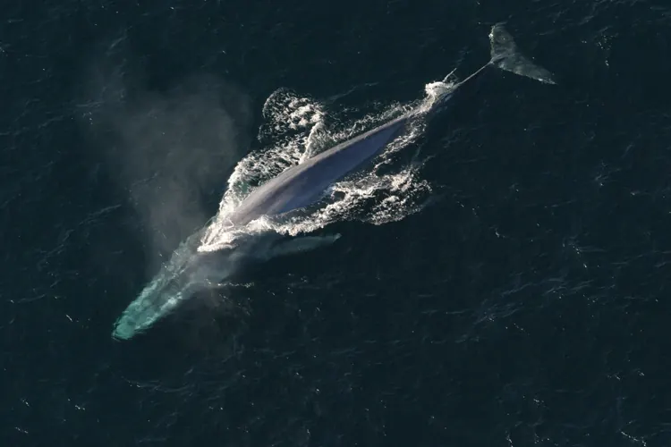
Синий кит
Самое большое животное в истории Земли. Его сердце весит около 180 кг, а язык тяжёлый, как целый слон.
- до 30 м — примерно 2,5 школьных автобуса
- до 150 т
- ест криль — 3–4 т в день
Живая энциклопедия · Глава 1
Самые большие животные, которые когда-либо жили на Земле. Листай вниз: мы опустимся от поверхности до самого дна океана, на 4 000 метров.
Кто такие киты
Кит живёт в воде, у него плавники и хвост, но он не рыба. Киты — млекопитающие, как собаки, лошади и мы с тобой.
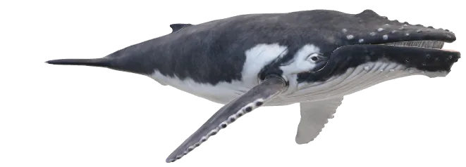
Знакомься
Китов больше 90 видов. Одни огромные и едят крошечных рачков, другие поменьше и охотятся стаями. Дельфины — тоже киты, только маленькие. Для сравнения: школьный автобус длиной около 12 метров.

Самое большое животное в истории Земли. Его сердце весит около 180 кг, а язык тяжёлый, как целый слон.

Самый известный певец океана и прыгун: выпрыгивает из воды почти целиком. Каждый год проплывает тысячи километров.
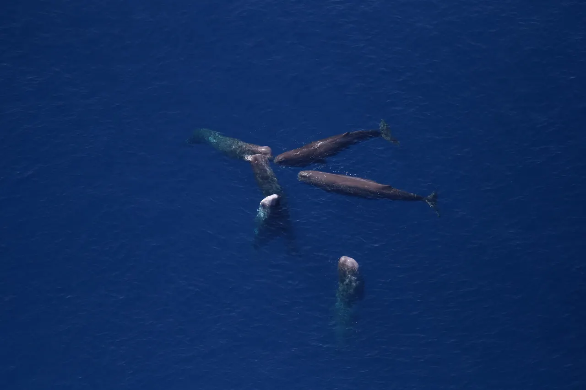
Чемпион среди ныряльщиков-охотников. У него самый большой мозг из всех животных на планете.
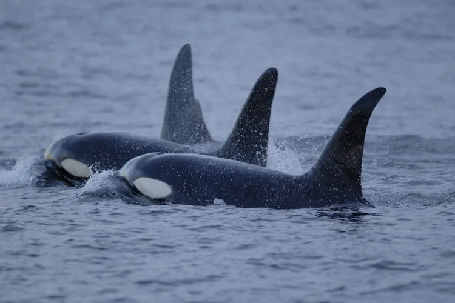
Касатка — самый большой дельфин. Охотится семьёй, и у каждой семьи свой «язык» из щелчков и свиста.
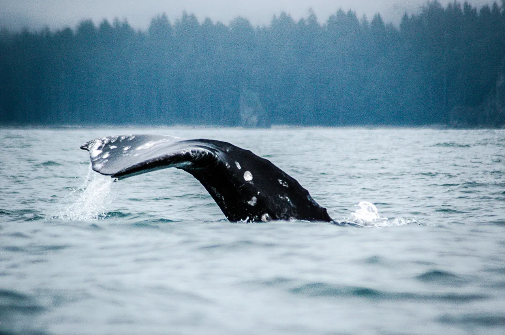
Великий путешественник: за год проплывает туда и обратно около 16 000 км, от холодных морей до тёплых лагун.
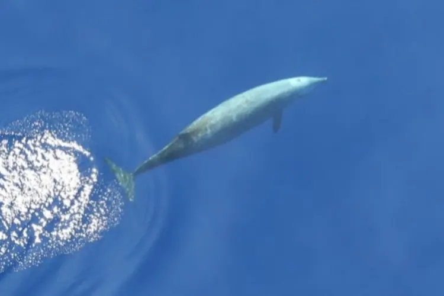
Самый глубоко ныряющий кит: почти 3 км вниз и почти 4 часа без вдоха.
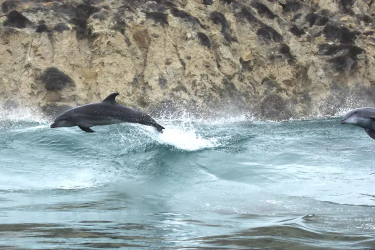
Дельфин — маленький зубатый кит. Афалины узнают друг друга по «именам»: у каждой свой свист.
−60 м
Самцы горбатых китов исполняют длинные песни. Одна песня длится 10–20 минут, и кит может повторять её часами. Все самцы в одном районе поют одну и ту же песню, и она понемногу меняется из года в год.
Под водой звук бежит примерно в 4 раза быстрее, чем в воздухе, поэтому голоса китов разносятся очень далеко.
Вдох на поверхности
Чтобы вдохнуть, кит поднимается к поверхности и выдыхает через дыхало — ноздрю на макушке. Тёплый влажный воздух превращается в облако брызг: это и есть фонтан. У синего кита он взлетает на высоту до 9 метров, выше трёхэтажного дома.
Перед нырком кит поднимает хвост над водой. По рисунку на хвосте учёные узнают каждого горбача, как нас по отпечаткам пальцев. Кашалот обычно остаётся под водой 45–60 минут, не делая ни одного вдоха.

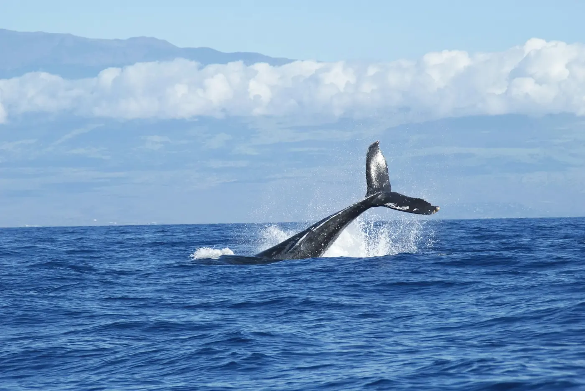
Солнечный свет пробивается сквозь воду, и здесь живёт больше всего рыб, водорослей и кораллов. Рыбы дышат жабрами и берут кислород прямо из воды. Киту так нельзя: ему нужен воздух, поэтому он всё время возвращается наверх.
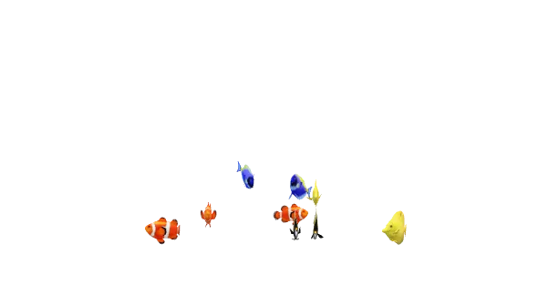
Сюда доходит совсем немного солнечного света, всё кажется тёмно-синим. Водоросли тут уже не растут. Зато медленно плавают медузы, а многие животные днём прячутся здесь, а ночью поднимаются наверх за едой.
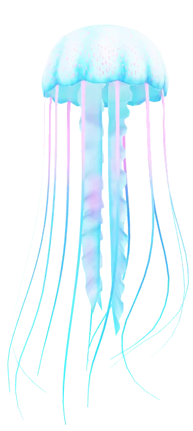
Здесь всегда темно и холодно. Свет дают только сами животные, например рыба-удильщик со светящейся «удочкой» над головой.
Сюда ныряет кашалот: на 1–2 километра, чтобы охотиться на кальмаров. В полной темноте он находит добычу щелчками — издаёт звук и слушает, как тот отражается от предметов. Это называется эхолокация.
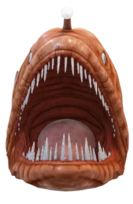
Рекорд: почти 3 километра
Глубже всех известных учёным китов ныряет клюворыл Кювье. В 2014 году учёные записали его погружение на 2 992 метра. А самое долгое погружение этого кита длилось 222 минуты, почти 4 часа без воздуха.
−4 000 м · дно
Тело огромного кита медленно опускается на дно. Учёные называют это «падением кита». На дне, где еды почти нет, оно становится праздником для сотен видов животных и кормит их десятилетиями.
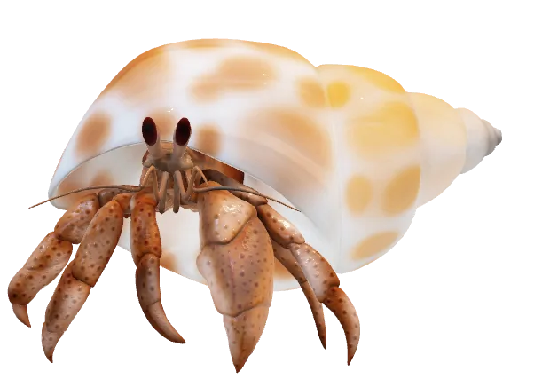
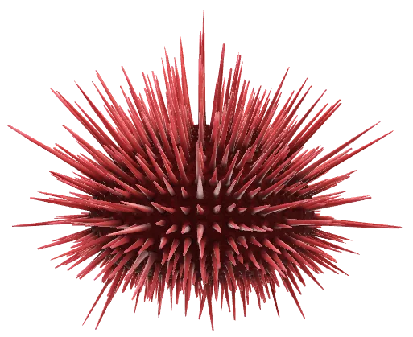
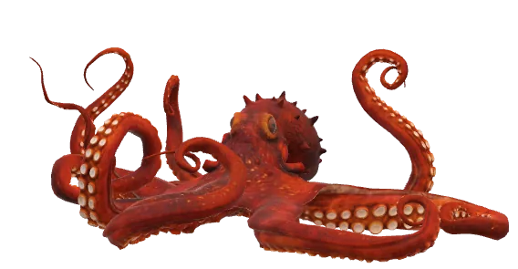
Приплывают акулы, миксины и крабы и съедают мягкие ткани.
Черви, улитки и рачки селятся вокруг костей.
Особые бактерии питаются жиром внутри костей, а ими питаются другие животные.

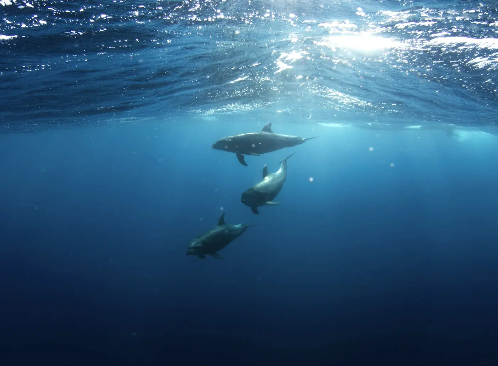